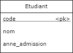

Création de BD et de tables
Normes de code du langage SQL
- Mots-clés du langage en MAJUSCULE (ex.: CREATE, SELECT, etc)
- Identifiants en minuscules (notation _, pas de CamelCase)
- Nom de tables et de BD commencent par une MAJUSCULE
- Commentaires multi-lignes: / … /
- Commentaire jusqu'à la fin de la ligne: #
- On termine une requête par un ;
- Apostrophes simples ' ' pour délimiter les caractères littéraux (string)
Les guillemets " " fonctionnent seulement dans certains cas, les apostrophes simples ' ' fonctionnent dans tous les cas.
Créer une BD
Pour créer une base de données l'instruction est :
CREATE DATABASE Nom_bd;
Pour afficher la liste des bases de données sur un serveur, on utilise la commande:
SHOW DATABASES;
Supprimer une BD
Pour supprimer une base de données, l'instruction est :
DROP DATABASE Nom_bd;
Toutes les tables et les enregistrements sont automatiquement supprimés.
Attention! Aucune confirmation n'est demandée.
--- Exercice 1.4.1 ---
- Créer une base de données nommée « Exemples »
- Lister les bases de données
- Supprimer la base de données « Exemples »
- Lister les bases de données pour confirmer
- Créer de nouveau une base de données « Exemples »
Quel raccourcis clavier permet d'exécuter toutes les lignes ou la ligne courante?
Créer une table
Pour créer une table, il faut d'abord sélectionner une BD. La sélection se fait à l'aide l'instruction suivante :
USE Nom_bd;
 La BD sera celle utilisée pour toutes les requêtes tant que l'instruction USE n'aura pas été rappelée.
La BD sera celle utilisée pour toutes les requêtes tant que l'instruction USE n'aura pas été rappelée.
Pour créer une table, la syntaxe est la suivante:
CREATE TABLE Nom_table (
nom_colonne1 TYPE,
nom_colonne2 TYPE,
...);
Exemple – Créer une table
Pour créer la table Étudiant correspondant au modèle suivant.

CREATE TABLE Etudiant (
code INTEGER,
nom VARCHAR(255),
annee_admission YEAR);
Afficher les tables
Pour afficher toutes les tables de la BD active, on utilise l'instruction :
SHOW TABLES;
Pour afficher la structure d'une table, on utilise l'instruction :
DESCRIBE Nom_table;
--- Exercice 1.4.2 ---
Créez la table représentant le modèle suivant.
Afficher la structure de la table après la création pour vous valider votre opération.
Notation diagrammes ER
On note sur le modèle de base de données le type de données associé au champ.
Par exemple, pour la table Étudiant, le modèle correspond maintenant à
Supprimer une table
Pour supprimer une table, l'instruction à utiliser est :
DROP TABLE Nom_table;
Tous les enregistrements sont automatiquement supprimés.
Attention! Aucune confirmation n'est demandée.
Clé primaire
Pour indiquer qu'un champ est une clé primaire, on indique PRIMARY KEY après le type du champ.
CREATE TABLE Etudiant (
code INTEGER PRIMARY KEY,
nom VARCHAR(255),
adresse VARCHAR(255));
Auto-incrément
Dans le cas où l'on ajoute un identifiant unique (id), on peut indiquer au SGBD d'incrémenter automatiquement sa valeur à chaque enregistrement.
Cela nous évite de devoir manuellement gérer la mise à jour de l'identifiant.
Cette fonction est disponible que si le type de colonne est INTEGER.
--- Exercice 1.4.3 ---
Pour définir un auto-incrément, il faut indiquer AUTO_INCREMENT après le type de la colonne.
Créer la table Cours. La colonne id_cours doit être auto-incrémentée. Afficher la table après pour voir l'impact de l'incrémentation automatique.
Valeurs par défaut
À la création d'une table, on peut indiquer une valeur par défaut.
Tous les nouveaux enregistrements auront cette valeur pour la colonne sauf si une autre valeur est indiquée.
On indique une valeur par défaut en utilisant la syntaxe suivante :
nom_colonne TYPE DEFAULT valeur
Pour ajouter une valeur par défaut sur un diagramme ER on l'indique avec le symbole = après le type.
Par exemple, dans la table Cours la durée par défaut est de 60 heures.
La requête pour créer la table cours serait donc:
CREATE TABLE Cours (
id INTEGER PRIMARY KEY AUTO_INCREMENT,
sigle CHAR(11),
duree TINYINT DEFAULT 60,
nom VARCHAR(255));
Modifier une table
Pour modifier une table, trois opérations sont possibles : ajouter une colonne, modifier une colonne, supprimer une colonne.
La requête est:
ALTER TABLE Nom_de_la_table
opération1,
opération2 ... ;
Ajouter une colonne
L'instruction est ADD suivi de la définition de la colonne
Par exemple, on a oublié une colonne dans la table Cours (on veut le résultat de droite)
La requête pour corriger la table est:
ALTER TABLE Cours
ADD sigle CHAR(11);
Modifier une colonne
Pour modifier une colonne existante, on utilise l'instruction MODIFY COLUMN suivie de la nouvelle définition de la colonne.
On a créé la table Cours avec la requête suivante:
CREATE TABLE Cours (
id INTEGER,
sigle CHAR (11),
duree SMALLINT,
nom VARCHAR(255));
La requête de modification devrait être:
ALTER TABLE Cours
MODIFY COLUMN id INTEGER PRIMARY KEY AUTO_INCREMENT,
MODIFY COLUMN duree SMALLINT DEFAULT 60;
Supprimer une colonne
On utilise l'instruction:
DROP COLUMN nom_colonne
Pour supprimer la colonne sigle de la table Cours, on utilise la requête suivante :
ALTER TABLE Cours
DROP COLUMN sigle;